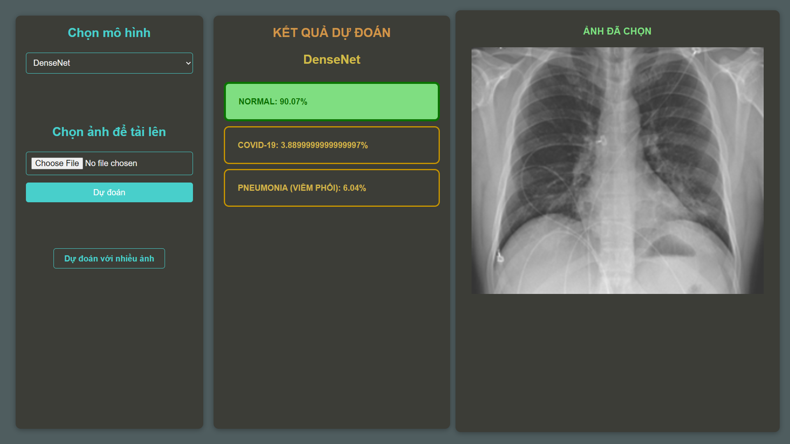

Xây dựng và triển ứng dụng với mô hình học sâu có khả năng phân tích và xử lý ảnh X-quang phổi nhằm trích xuất và nhận dạng các đặc trưng quan trọng từ ảnh. Từ những đặc trưng này, mô hình sẽ đưa ra các kết quả phân loại một cách chính xác, hỗ trợ trong việc đánh giá tình trạng phổi qua ảnh X-quang.
import os
from flask import Flask, render_template, send_from_directory, flash, redirect, url_for, request
Khởi tạo ứng dụng Flask, cấu hình thư mục tải lên và khóa bí mật.
def handle_image_upload(image):
if not image or image.filename == '':
flash('Chưa chọn ảnh !', 'error')
return False
if not allowed_file(image.filename):
flash('Chỉ nhận được file jpg, png, jpeg', 'error')
return False
return True
Hàm kiểm tra tính hợp lệ của ảnh được tải lên.
def is_xray_image(image_path):
img = cv2.imread(image_path, cv2.IMREAD_GRAYSCALE)
contrast = img.max() - img.min()
if contrast < 150:
return False
height, width = img.shape
aspect_ratio = width / height
if aspect_ratio < 0.8 or aspect_ratio > 1.2:
return False
edges = cv2.Canny(img, 50, 150)
edge_density = np.sum(edges) / (height * width)
if edge_density < 3 or edge_density > 50:
return False
return True
Hàm kiểm tra đặc điểm của ảnh để xác định xem có phải ảnh X-quang không.
def upload_zip():
zip_file = request.files.get("zip_file")
if not zip_file or zip_file.filename == '':
flash("Chưa chọn tệp !", "error")
return redirect(url_for('upload_zip'))
Xử lý tải lên tệp ZIP và trích xuất nội dung để dự đoán.
import numpy as np
from tensorflow.keras.models import load_model
from tensorflow.keras.preprocessing.image import load_img, img_to_array
MODELS = {
"DenseNet": load_model('models/densenet_model.h5'),
"Resnet50": load_model('models/resnet50_model.h5'),
"Vgg19": load_model('models/vgg19_model.h5'),
}
def predict_image(image_path, model_name):
if model_name not in MODELS:
return {"error": "Chưa chọn mô hình máy học nào! Hãy chọn 1 mô hình để dự đoán."}
model = MODELS[model_name]
img = load_img(image_path, target_size=(224, 224))
img_array = img_to_array(img) / 255.0
img_array = np.expand_dims(img_array, axis=0)
predictions = model.predict(img_array)
class_names = ['NORMAL', 'COVID-19', 'PNEUMONIA (VIÊM PHỔI)']
class_probabilities = predictions.tolist()[0]
result = {class_names[i]: round(class_probabilities[i], 4) for i in range(len(class_names))}
return result
Tải mô hình máy học và dự đoán loại bệnh dựa trên ảnh X-quang.

Đoạn mã trên sử dụng mô hình ResNet-50 để nhận diện ảnh X-quang.
| Mô hình | Độ chính xác (Accuracy) |
|---|---|
| ResNet-50 | 95.3% |
| VGG-19 | 93.8% |
| DenseNet | 96.1% |